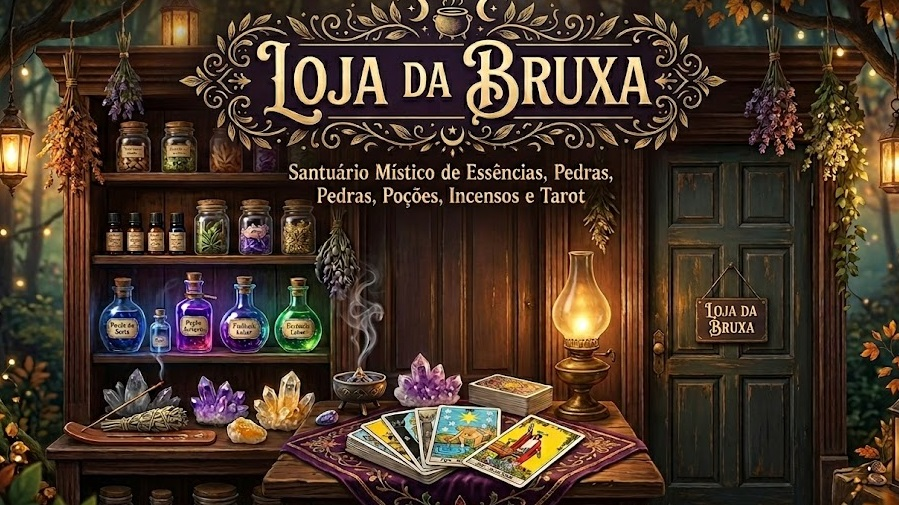

Bem-vindo ao nosso site!
Loja da Bruxa
Explore nossos produtos e entre em contato conosco.
Nossos Produtos
Confira alguns de nossos produtos
Incensos

Incenso Flor de Lótus
O Incenso Flor de Lótus é uma fragrância suave e relaxante, perfeita para criar um ambiente de paz e serenidade. Ideal para meditação, yoga ou simplesmente para perfumar seu espaço com um aroma delicado e floral.
Poções

Poção de Elixir
O Elixir é um frasco decorativo que evoca sabedoria e vitalidade, simbolizando poder e rejuvenescimento. Perfeito para adicionar um toque de mistério e encanto à sua estante ou altar mágico.
Essências
Essência Menta Pipirita

A menta pipirita é expectorante e descongestionante, promove liberação das vias nasais; Auxilia com problemas respiratórios, ótimo para sinusite e rinite.
Contato
Entre em contato conosco para mais informações.
Conheça nossas redes sociais:
Instagram Facebook